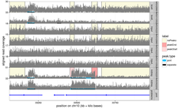
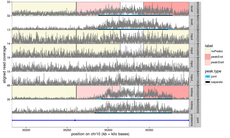
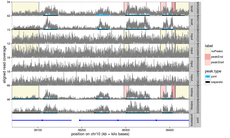
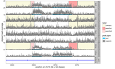
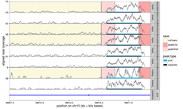
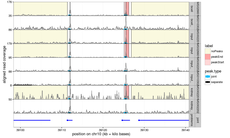

| chunk | image | |
|---|---|---|
| 1 | chr10:33061897-33974942 |  |
| 2 | chr10:35182820-35398459 |  |
| 3 | chr10:38041023-38444133 |  |
| 4 | chr10:38585584-38790663 |  |
| 5 | chr10:38807475-38819342 |  |
| 6 | chr10:39098319-39140858 |  |
| problem | samples | peaks | peak.samples | labeled.chunks | labeled.regions | labels | |
|---|---|---|---|---|---|---|---|
| 1 | chr10:60000-17974675 | 0 | 0 | 0 | 0 | 0 | 0 |
| 2 | chr10:18024675-38818835 | 8 | 14 | 50 | 5 | 19 | 152 |
| 3 | chr10:38868835-39154935 | 8 | 2 | 16 | 1 | 4 | 32 |
| 4 | chr10:42354935-42546687 | 0 | 0 | 0 | 0 | 0 | 0 |
| 5 | chr10:42596687-46426964 | 0 | 0 | 0 | 0 | 0 | 0 |
| 6 | chr10:46476964-47429169 | 0 | 0 | 0 | 0 | 0 | 0 |
| 7 | chr10:47529169-47792476 | 0 | 0 | 0 | 0 | 0 | 0 |
| 8 | chr10:47892476-48055707 | 0 | 0 | 0 | 0 | 0 | 0 |
| 9 | chr10:48105707-49095536 | 0 | 0 | 0 | 0 | 0 | 0 |
| 10 | chr10:49195536-51137410 | 0 | 0 | 0 | 0 | 0 | 0 |
These are great candidates for re-labeling.
0 genomic regions were predicted to have a peak in each Input sample, and no peaks in other samples.
0 genomic regions were predicted to have no peaks in any Input samples, and at least one other group with peaks in all samples.
0 genomic regions were predicted to have a peak in each Input_ sample, and no peaks in other samples.
0 genomic regions were predicted to have no peaks in any Input_ samples, and at least one other group with peaks in all samples.
0 genomic regions were predicted to have a peak in each bcell sample, and no peaks in other samples.
0 genomic regions were predicted to have no peaks in any bcell samples, and at least one other group with peaks in all samples.
0 genomic regions were predicted to have a peak in each bcell_ sample, and no peaks in other samples.
0 genomic regions were predicted to have no peaks in any bcell_ samples, and at least one other group with peaks in all samples.
1 genomic region was predicted to have a peak in each kidney sample, and no peaks in other samples.
| peak | peakBases | loss.diff | samples | |
|---|---|---|---|---|
| 1 | chr10:38043093-38101290 | 58197 | 67625.58 | kidney:1 |
0 genomic regions were predicted to have no peaks in any kidney samples, and at least one other group with peaks in all samples.
0 genomic regions were predicted to have a peak in each kidney_ sample, and no peaks in other samples.
0 genomic regions were predicted to have no peaks in any kidney_ samples, and at least one other group with peaks in all samples.
{kind=link}
{kind=link}
{kind=link}
{kind=link}
{kind=link}
{kind=link}